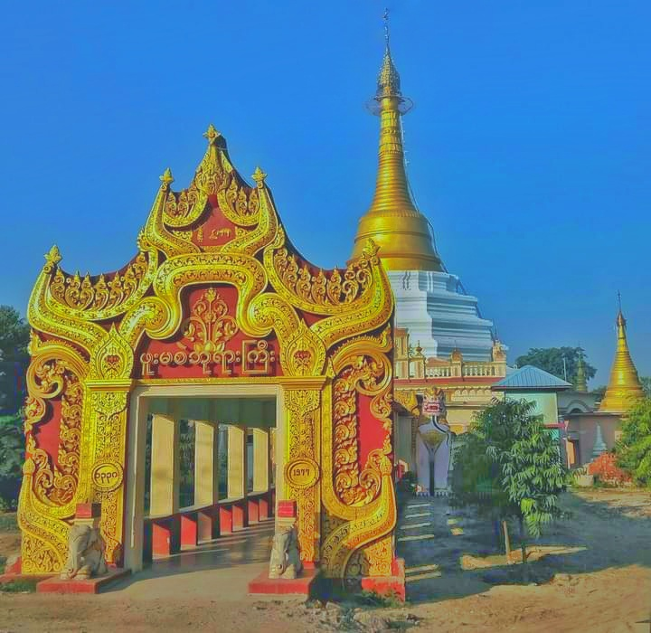

About Monywa

The Mean of Monywa City?
Monywa City, Mau Village, Phone Ma Si Pagoda History When the stone inscription was written on stone, the age of Monywa capital reached 105 years.
What is a Monywa?
Monywa City is located on the east coast of the Chindin River in Lower Sagaing Division. Geographically, it is located between 21° 6 minutes to 12° 8 minutes of North Latitude and 98° 8 minutes to 95° 23 minutes of East Longitude. Monywa Township has an area of 266 square miles. Monywa Ward in 1891 In 2005, there were two wards called Boating Wards, which increased to 24 wards in 2005. In 1888, there were two thousand people, and in 2005, the population increased to 229,806 people.
The town of Monywa is fifty miles from the confluence of the Irrawaddy and Chindun rivers and is about 267 feet above sea level. There is an elegant slope from east to west in terms of land surface position. In the eastern part, a raven mountain, Kuokka Mountain There is a line of golden mountains and the remaining areas in the township are plain areas with elegant undulations. As for the soil, loamy soil along the Chindin river basin and in the southern watershed areas. There are few areas. In the eastern part, gravel land is found, and in the central part, sand, There are red sand areas. Average annual temperature is 816 degrees Fahrenheit and rainfall ranges from 21 to 45 inches. Hot and dry in the summer, less rain in the rainy season, and cold and dry in the winter.
The Monywa city was an ordinary village during the Bagan period, and did not emerge until the mid-16th century AD in the Ava period. It is included under Alon City and is ruled by the village chief. From the first half of the 18th century in the late Inwa period, when discipline improved, in the late Konbaew period, it was called a city, and it developed as a commercial port city. After the British took control of Myanmar, it was at a crossroad in terms of transportation, and after forming a municipal group and becoming a district city, it rose rapidly.
City records
1980 / 2015
History of Phuu Ma Sae Pagoda

Historical Phuu Ma Sae Pagoda
Namotassa Bhagavadaw Arahataw Truth Sambuddhasa
After being transported by rafts to Khemasai, the deities, Brahmans, and beings worthy of release, after forty-five years and eighty years, the wealth of one hundred and forty-eight years of life was incomparable.
( Lety Monk )
Lord Gautama went to Nirvana Shwe on the full moon of the 148th year of the Great Year, after feeding the living beings non-stop for forty-five days They locked the machinery securely so that it could not be destroyed.
At the end of the year 2187, Nigrodhathamaney's "Pamador Ms. Noor Padam" On the 15th day of the new moon of the year 218, the Buddha's body was excavated and buried in the southeast corner of the city of Rajaghol 84,000 pagodas were caught by the moon at the time of entering the moon. 84,000 wells 84,000 lakes, He ordered 84,000 schools to be built, and on the 15th day of the new moon of the fifth month, when he was freed from the capture of the demon, they built them all over the island of Zambudet, as he had ordered. The title of the pagoda was named after the time when Sanda was freed from the hand of Aurein. The pagoda lasted until 1769 during the reign of King Narapati Min of the Pagoda in the year 8057. As he was looking around the rich farm forest, he left Lamphyuwong (Nabuwong) and saw that five birds had flown away.
Pongma Thu Khare, who had a desire to repair the old pagoda, led the chief of the region, Puyan, to make 50 pieces of ruby gold as a gift and ask for permission to restore the good deeds of King Sri Dhamma Soka After putting the whole gold-colored mother in a gold cup and participating in the merits, the four areas of Sindhi Kadu area, He also dedicated eight places. .
The records were written by Maung Pydu and Maung Kyaw Sanhla, the Maugyi village executive, and Maung Myathla, who were tax historians of the tax administration (Kyu Chi Wai Thaw Graduate) on Thursday, the 9th of the first full moon of the year 1150.
Although we have not found the scroll with the size of the document mentioned above, it has been handed down by successive monks and monks who were interested in the records, and on the 1st of the 14th day of the new month of Tangkhul, 1354, U Kamkolay + Daw Ohnin family of Mokot city, thanks to the kindness of the family of U Kam Kolay + Daw Ohn Rin, came to be written on stone. .
Stone Letter

Stone Letter
Second stepping stone
The second inscribed stone inscription (see) was found in Mandalay Mahamyat Muni's stone library when he was a student.
Pagoda for the sake of business and religion of the ancient Bailong dynasty. school pond He saw that the land that was donated for the purpose of the monks had been deteriorating for a long time, and in order for the blessings to flow to the religion, on the 3rd day of the full moon of the year 804, King Narapati donated the land that King Sri Dhammasoka had donated to Muttho Boornmase Pagoda in Chindunna Maugyi He made a new record and donated it again.
The white elephants of Amarapura, A copy of the stone donated by the King of Life was made possible in the month of 1358, thanks to the kindness of U Maw + Daw Moe Shin of Maugyi village.
A stone letter
However, it is not found in the inscription of the stone inscription from the reign of Amara Purasin Phuyu until 1247. From the time of his slavery until 13607, Dayyika, a generous person from Maugyi Village and the surrounding villages, It is said that it will be obtained by showing that the good deeds of the Dayikamas have progressed. With the good deeds of U Bo Nu + Daw Htay Sein, who stood in the east of Maugyi village, he was able to erect a stone inscription in 1362.
Namotassa Bhagavadaw Arahataw True Buddha